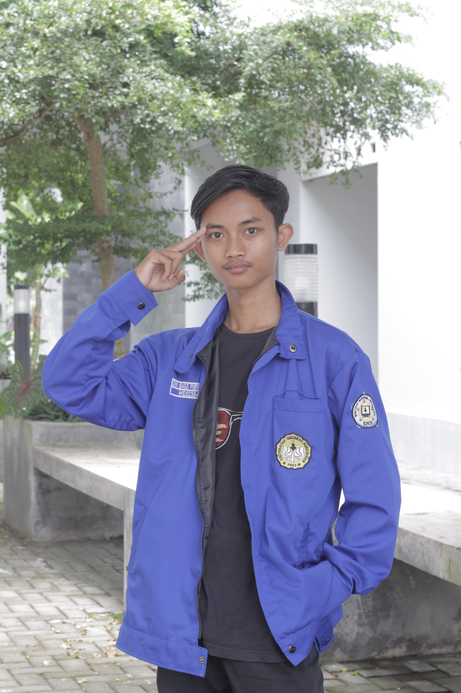
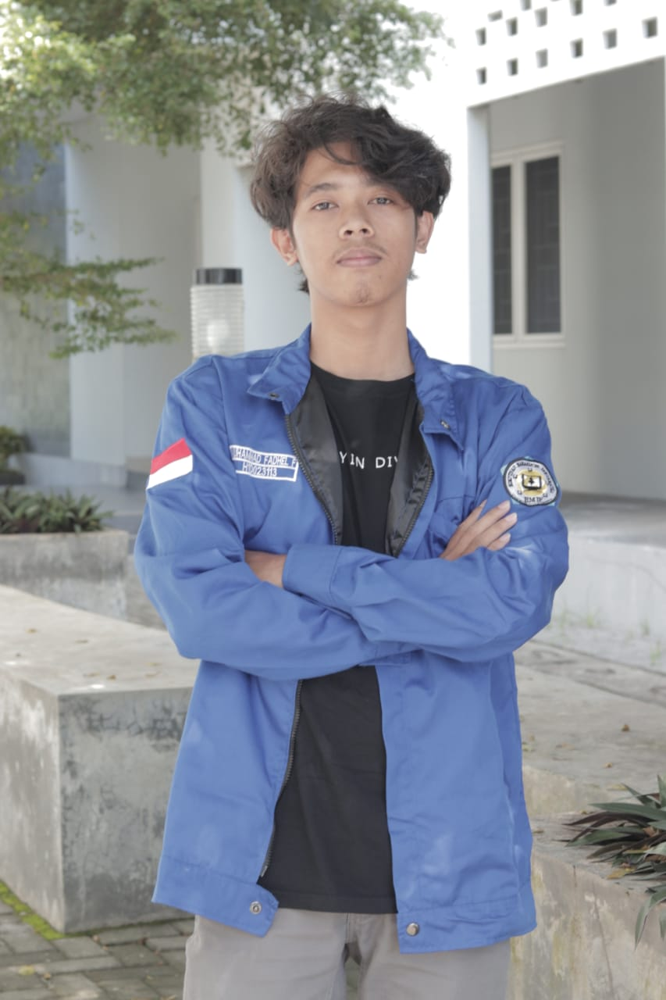
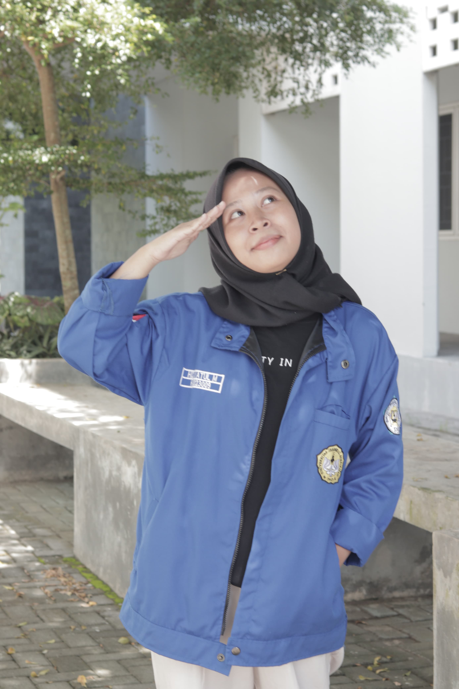

DWI BAGUS PURWO AJI
Backend

MUHAMMAD FADHEL FAUSTA
Frontend

ARIZA NOLA RUFIANA
UI/UX
Terima kasih telah mengunjungi website kami yang penuh dengan informasi menarik tentang "Stranger Things". Kami sangat menghargai dukungan dan antusiasme Anda terhadap serial ini. Kami berharap Anda menikmati konten yang kami sajikan, termasuk berbagai kuis dan permainan yang berhubungan dengan "Stranger Things". Semoga website ini dapat menjadi sumber hiburan dan pengetahuan yang menyenangkan bagi Anda. Jangan ragu untuk memberikan masukan dan saran agar kami dapat terus meningkatkan kualitas konten dan layanan kami. Terima kasih dan selamat menikmati petualangan di Hawkins!
Versi 1.0
Kembali